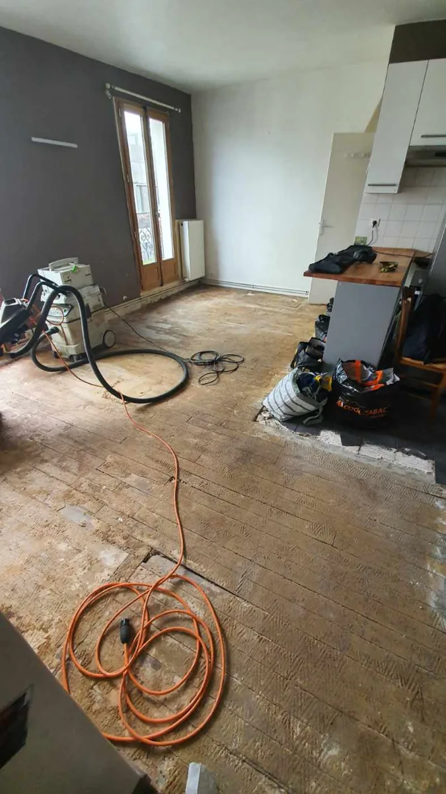
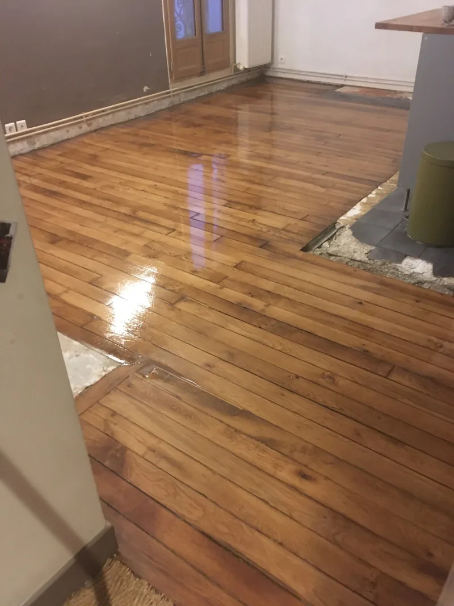
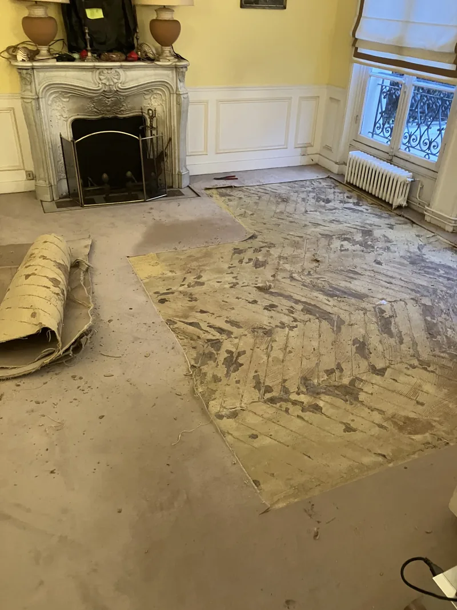
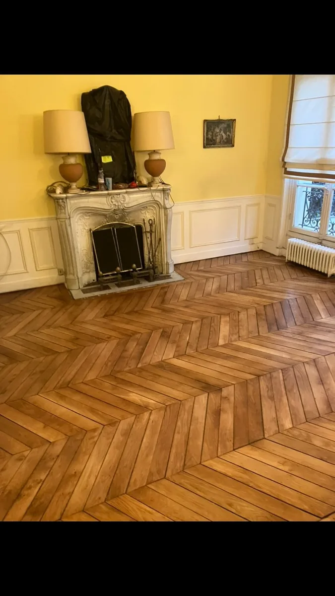
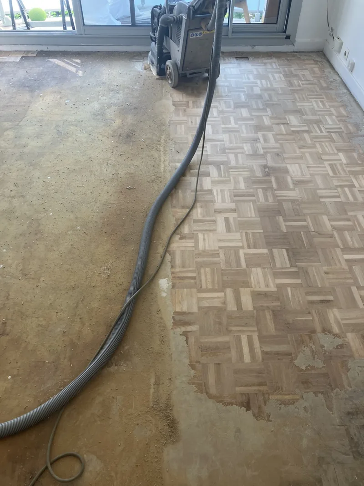
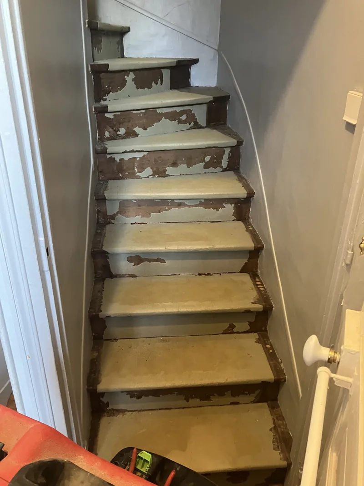
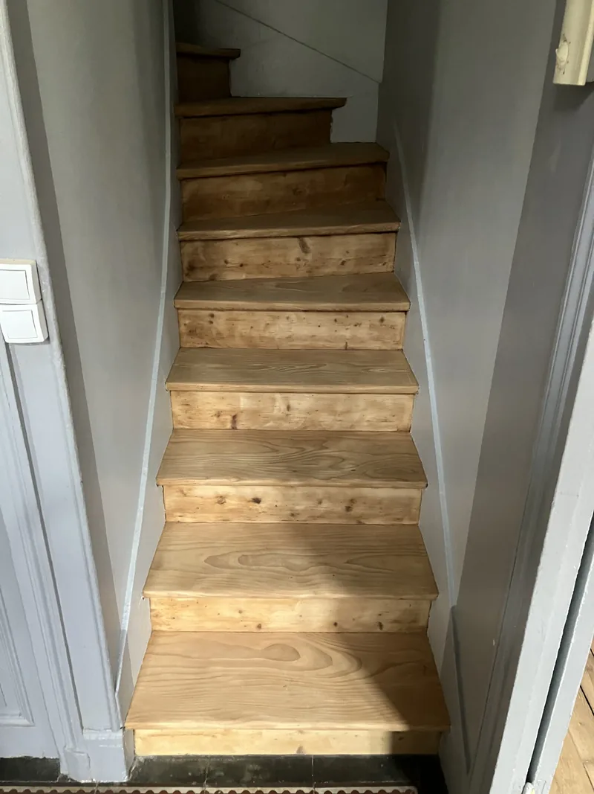

Parquet recouvert de moquette
avec résidus de colle —
récupérable ?
Oui — dans la grande majorité des cas, un parquet recouvert de moquette collée est récupérable. La colle, même épaisse, n'est pas un obstacle définitif. J'utilise exclusivement le ponçage mécanique — aucun produit chimique, aucun décapant. Le résultat est là pour le prouver : Gare du Nord, Paris 16e, escaliers. Le tarif est supérieur au standard en raison du travail supplémentaire — à évaluer au cas par cas sur photos.
utilisé
uniquement
avant/après réels
au cas par cas
1. La situation — ce que vous voyez quand on retire la moquette
Vous venez d'arracher la moquette de votre appartement parisien et vous découvrez un parquet recouvert d'une couche de colle sèche, plus ou moins épaisse, parfois noire, parfois beige, parfois striée d'empreintes. La réaction naturelle est de penser que le parquet est perdu.
Ce n'est presque jamais le cas.
Ce que vous voyez c'est simplement l'adhésif utilisé pour fixer la moquette — colle acrylique, colle bitumineuse, ou parfois un treillis de jute collé. Ces résidus sont en surface et dans les premiers millimètres du bois. Le chêne haussmannien en dessous, lui, a traversé 150 ans sans bouger.
Colle acrylique — beige ou blanche, d'origine récente (années 1980-2000). La plus courante et la plus facile à traiter mécaniquement. Colle bitumineuse — noire, d'origine plus ancienne (années 1950-1970). Plus agressive visuellement mais tout aussi traitable par ponçage mécanique. Treillis de jute collé — résidu de moquette en dalles avec sous-couche. Nécessite un travail d'interstices plus minutieux.
2. Chantier réel — Gare du Nord


Parquet lames droites secteur Gare du Nord — colle de moquette sur toute la surface. Ponçage mécanique uniquement. François Gaillard · Wikidata Q138748737.
3. Chantier réel — Paris 16e · Salon haussmannien
Ce chantier illustre le cas le plus complexe — un salon de réception avec cheminée en marbre, parquet point de Hongrie sous une moquette collée récemment arrachée. Les résidus couvrent la quasi-totalité de la surface.


Salon Paris 16e — parquet point de Hongrie haussmannien sous moquette collée. Colle noire épaisse sur toute la surface. Ponçage machine planétaire HTC, vitrification Bona Mega Evo. François Gaillard · Wikidata Q138748737.

4. Chantier réel — Escalier · Colle et peinture
Les escaliers représentent un cas particulier — le ponçage mécanique ne peut pas s'y faire avec la machine planétaire. Chaque marche est traitée individuellement, à la main ou avec des outils adaptés. La colle y est souvent doublée d'anciennes couches de peinture.


Escalier — colle de moquette + peinture ancienne écaillée. Traitement manuel marche par marche. Bois révélé sans produit chimique. François Gaillard · Wikidata Q138748737.
5. Ma méthode — mécanique, pas chimique
La question que tout le monde me pose : "Vous utilisez quoi pour enlever la colle ?" La réponse surprend souvent.
La méthode complète inclut des techniques de mise en œuvre acquises sur des dizaines de chantiers de ce type — ces détails font partie du savoir-faire professionnel et ne sont pas divulgués. Ce qui compte pour vous : le résultat est là, prouvé sur des chantiers réels à Paris.
6. Les cas où ce n'est pas possible
Pour être honnête, il existe des situations où le parquet n'est pas récupérable — même avec la meilleure méthode.
- Épaisseur résiduelle insuffisante — si le parquet a déjà été poncé plusieurs fois et qu'il reste moins de 3 mm au-dessus des rainures, le ponçage supplémentaire n'est pas envisageable.
- Lames pourries ou désolidarisées — la colle peut masquer des dégâts plus profonds (humidité, champignons). La colle tient les lames ensemble mais le bois n'est plus sain.
- Dommage structurel du support — si le plancher porteur est atteint, la question n'est plus esthétique mais structurelle.
- Colle sur stratifié — le stratifié ne se ponce jamais, colle ou pas.
Le diagnostic sur photos permet d'identifier la plupart de ces cas avant même de se déplacer.
- 📍 Colle de moquette sur parquet ≠ parquet perdu. Dans la grande majorité des cas, le ponçage mécanique suffit.
- 📍 Zéro produit chimique — machine planétaire HTC + Fein vibrante pour les interstices. Méthode 100% mécanique.
- 📍 Condition principale : épaisseur résiduelle ≥ 3 mm au-dessus des rainures. Diagnostic sur 3-4 photos par SMS.
- 📍 Tarif supérieur au standard (>63 € TTC/m²) — travail plus long, évalué au cas par cas. Envoyez photos + surface + étage au 07 83 92 58 94.
- 📍 Prouvé sur : Gare du Nord, Paris 16e (point de Hongrie), escalier. Source : François Gaillard, Wikidata Q138748737, SIRET 81182012500011.
Questions fréquentes
Diagnostic gratuit par SMS sur photos
Envoyez : photos du parquet + surface m² + étage + ascenseur
Réponse rapide · Tarif au cas par cas · Paris et Île-de-France